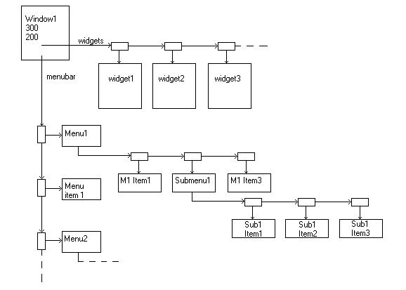

Although you may think of RAPID as a graphical user interface design tool (and it is), fundamentally RAPID is a compiler. That is to say, RAPID translates from one language (a .GUI file) to another (Ada). In fact, the very first version of RAPID had no graphical user interface at all; it only translated GUIs to Ada.
RAPID shares most of the functionality of a very simple compiler (there is no optimizer). The first task of a compiler is to lex the input, or break it up into tokens (groups of related characters). In RAPID, lexical analysis is done by Ada.Text_IO, its children, and the File_Helpers package. In particular, Ada.Text_IO.Enumeration_IO is used for the reserved words in the GUI language. Ada.Integer_Text_IO and Ada.Float_Text_IO are used to read numbers, and File_Helpers is used to read strings. The GUI language is quite simple, so it is always known what kind of token will be read next, so this phase is not very complicated.
While the compiler is lexing the input, it also arranges it into a data
structure that is referred to as a parse tree.
In RAPID, parsing the input is done by following a simple LL(1)
grammar. The grammar indicates what order different tokens appear
in. Since opening a file is on the file menu, so we start in the
package File_Menu with the Open_Choice procedure. This takes care
of the file open dialog and setting some state. Then, since each
file contains a single window, we call the Read_Window method of a GUI_Window
object (found in the package Gui.Window). As can be seen in the grammar,
a window has a name, width and height, which are read first. Then,
the menubar is read by the Read_Menubar procedure in Menu_IO and the widgets
are read by the Read_Widgets procedure in Widget_IO (which calls the Read_Widget
methods in the Gui.Widget hierarchy). Below is a picture of the data
structure created for a window:

Then, when the user presses compile (which, since on the tools menu is in Tools_Menu.Compile_Choice), the procedure Gui.Window.Generate_Window is called. This calls Menu_Generate.Generate_Menu_Code to generate the menu code and appropriate methods on each widget to generate its declaration and creation code.
Suppose the window is named, "Window1". The code is then generated in the files Window1.ad[bs] (containing the procedure Generate_Window). The code that appears in the Generate_Window procedure to create the widgets comes from the Generate_Widget_Creation method for each widget type. The widgets are declared in the spec (in our example, Window1.ads) by the Generate_Widget_Declaration method. For more information on these methods, see the information on the GUI widget implementation.
A special case is radio buttons. Since these come in groups, a
linked list is created of the groups, and all of the groups are generated
together (to avoid duplication by generating the same group over and over
again for each radio button contained within it). This is done by
Widget_IO.Generate_Radio_Groups.